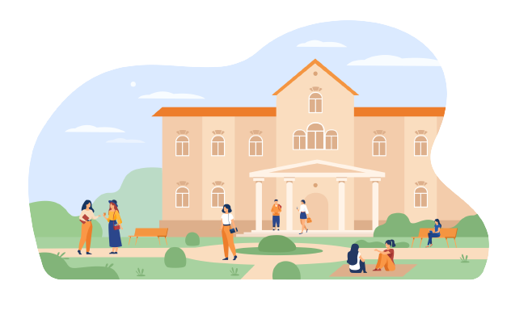

¿Quienes Somos?

Bienvenidos a la UNTREF. Una institución que produce, adquiere y otorga conocimiento de diversas
maneras, para toda la comunidad. Donde la formación académica, la investigación y la extensión
universitaria se fusionan, generando un vínculo con la sociedad en forma de educación, innovación,
deporte, información, ciencia, arte y cultura.
¿Por que elegirnos?

En el marco de su Plan Estratégico, la Universidad Nacional de Tres de Febrero ha desarrollado un
significativo número de actividades de docencia, investigación y extensión, con un alto impacto
académico y social.
En términos de docencia, la oferta académica de la UNTREF alcanzó las 30 carreras de grado y 45 de
posgrado. Con un número de estudiantes que supera los 12 mil. En modalidad a distancia, la UNTREF
Virtual completa con 40 programas entre cursos, diplomaturas, tecnicaturas, licenciaturas,
especializaciones y maestrías.
El desarrollo de la producción de conocimiento en términos de investigación se concretó en 120
líneas de investigación.
Las áreas focalizadas de avance en docencia, investigación y extensión, se consolidaron en 20
institutos, núcleos y centros.
En concepto de Extensión, la UNTREF llevó adelante 65 cursos y talleres, con más de 1100
participantes. Un capítulo especial de extensión lo constituyó el inicio de UNTREF Deportes con la
presentación de UNTREF Voley que se consagró campeón de la Liga A2 y su consecuente ascenso a la
liga máxima del voley nacional.